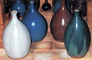

Avec
l'arrivée et la vulgarisation des logiciels pour le calcul des
glaçures, vous pourriez penser qu'un livre sur la substitution
des matériaux céramiques serait devenu superflu, toutefois c'est
loin d'en être le cas. Le livre du Québecois Édouard Bastarache
est destiné aux potiers qui ne sont pas familiers avec la chimie
des glaçures et les logiciels conçus à cet égard - une proportion
toujours substantielle de la communauté des potiers, parce que
l’apprentissage du fonctionnement d’un tel logiciel serait une
tâche intimidante. Le livre de Bastarache remplit cet espace important,
donnant clairement des directions faciles pour la substitution
des matériaux céramiques de base. La recherche, qui forme la
base de ce livre, devrait même être utile pour les potiers familiers
avec les logiciels pour le calcul des glaçures.
Le livre est divisé selon les chapîtres suivants avec les
substitutions pour :
- Le Spodumène
- La Pétalite
- La Lépidolite
- Les Feldspaths Potassiques
(Feldspath Custer)
- Les Feldspaths Sodiques
(Feldspath Kona F-4)
- Le Feldspath G-200
|
- La Cendre Volcanique
- La Dolomie
- La Wollastonite
- La Pyrophyllite
- Le Talc
- Le Cornish Stone
- Le Plastic Vitrox
|
Comme il s'avère, ce livre est non seulement une source
de substitutions de matériaux, mais également de recettes de glaçures
de grès. En utilisant un nombre limité de recettes, l'auteur substitue
les ingrédients ci-dessus (le cas échéant), chapitre par le chapitre,
offrant de nouvelles formules à considérer. Les glaçures utilisées
dans cette recherche incluent
- Satin Mat Clair
- Clair Glacé (variés)
- Blanc Glacé
- Blanc Leach
- Blanc Laiteux
- Off-White
- Bleu Mat
- Bleu Glacé
- Rouge de Cuivre
- Noir Lindo
- Kaki
- Caramel
|
- Base Jaune
- Vert Russet
- Tan Glacé
- Tan Mat
- Vert Mat
- Vert Glacé
- B.G. Vert
- Vert Oribe
- Turquoise
- Seacrest
- Céladon
- Tenmoku
|
Multipliant les recettes ci-dessus avec les substitutions
suggérées, nous arrivons à des centaines de variations appropriées
pour expérimentation et essais plus poussés avec des matériaux
locaux. Cependant, cette publication n'est pas un recueil de glaçures.
Son but est plutôt de servir de guide pour la substitution des
matières premières. Il peut y avoir diverses raisons pour vouloir
faire ceci - un matériau peut ne pas donner le résultat que vous
voulez (par exemple la Lépidolite peut causer la formation de
bulles), ou un matériau peut ne pas être disponible dans votre
pays ou région.
Même
si Bastarache a employé principalement des glaçures de grès de
l’intervalle de cuisson de cône 8-10 (quelques glaçures de moyenne
température sont également inclues), les substitutions suggérées
devraient fonctionner également pour les glaçures des autres intervalles
de cuisson, ou pour des recettes d'argile.
Regardons un exemple, la substitution du feldspath de Kona
F-4 dans une glaçure Tenmoku (cuisson en réduction à cône 8-10):
Recette Originale
La substitution se résume comme suit :93.3% Feldspath
Custer + 3.8% Carbonate de Calcium + 3.34% Alumine pour 100% de
Kona F-4.
 Edouard
Bastarache habite le Québec, Canada, et a une
histoire colorée. Il a étudié la chirurgie, la médecine interne
et la physiologie neuroendocrine et a été chercheur de même que
consultant en Médeine du Travail et de l’Environnement de 1971
à 1983. Depuis 1983 il est consultant plein temps en Médecine
du Travail et de l’Environnement.
Edouard
Bastarache habite le Québec, Canada, et a une
histoire colorée. Il a étudié la chirurgie, la médecine interne
et la physiologie neuroendocrine et a été chercheur de même que
consultant en Médeine du Travail et de l’Environnement de 1971
à 1983. Depuis 1983 il est consultant plein temps en Médecine
du Travail et de l’Environnement.
Pendant ses études médicales, il a étudié la céramique
sous Julien Cloutier à la Boutique d'Argile de la Ville de Québec,
et plus tard il a également enseigné à la même école. Bastarache
vit maintenant dans la région de Sorel-Tracy du Québec, près du
fleuve St-Laurent. Il emploie fréquemment des déchets des usines
sidérurgiques situées dans le secteur pour colorer beaucoup de
ses glaçures et argiles. Il cuit la majeure partie de ses œuvres
à cône 9 1/2 en réduction dans un four à gaz à flamme renversée
de 60 pieds cubes.
Substitutions De Matériaux
Céramiques Complexes est disponible en
7 langues: Français, Anglais, Allemand, Italien, Espagnol, Portugais
(Portugal & Brézil), and bientôt en Esperanto chez les distributeurs
suivants :